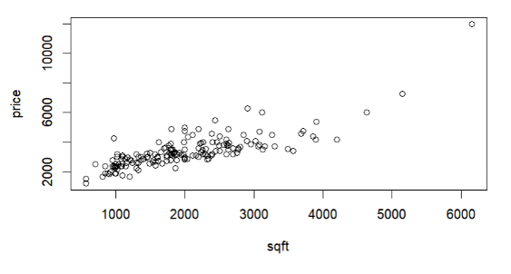
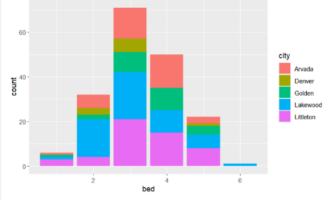
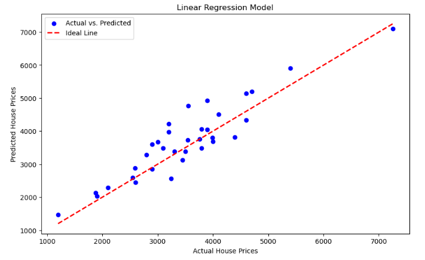

About Me
Hi, I’m Lily Renneker and welcome to my project portfolio!
I recently graduated from Colorado School of Mines with a B.S. in Computational and Applied Mathematics, and I’m now pursuing my M.S. in Applied Mathematics with a focus in data science at the University of Colorado Denver. My goal is to apply data-driven methods and mathematical modeling to tackle real-world challenges from finance, to biotech, to math education.
During undergrad, I worked on a variety of projects with many different applications, from mathematical biology to climate change to finance prediction models. In the summer between my junior and senior year, as a Managed Application Services Intern at RSM US LLP, I built data automation tools within Microsoft Dynamics 365, reducing processing errors and streamlining batch tracking.
Looking ahead, I’m especially motivated to contribute to biotechnology and personalized medicine, using data science to improve outcomes for underrepresented communities. I’m also passionate about making mathematics more inclusive and accessible through research and education.
Beyond academics and research, I’ve been involved with the Society of Women Engineers, Society for Women in Mathematics, and OSTEM. These communities have been vital in helping me advocate for diversity in STEM and connect with others who share my values.
Technical Skills
Programming Languages: MATLAB, R, Python, C++, HTML/CSS, JavaScript, SQL, X++
Tools & Environments: VS Code, RStudio, Power Apps, Power Automate, Microsoft Excel, PostgreSQL, GitHub, Jupyter
Technologies & Frameworks: pandas, NumPy, scikit-learn, Power BI, Tableau, Matplotlib, SQLAlchemy, TensorFlow
Languages: English (fluent), Spanish (bilingual proficiency)
Education
University of Colorado Denver | M.S. in Applied Mathematics (Data Science Concentration)
Expected Graduation: May 2027
- Current graduate student focused on mathematical modeling, data science, and interdisciplinary applications in genomics, healthcare, and education.
- Coursework will include (but not limited to): Applied Regression Analysis, Machine Learning Methods, Linear Programming, and Applied Linear Algebra.
Colorado School of Mines | B.S. in Computational and Applied Mathematics
Graduated: May 2025
- Completed bachelor's degree in 3 years with a 3.3 Cumulative GPA
- Relevant coursework: Database Management, Data Structures and Algorithms, Mathematical Neuroscience, Computational Linear Algebra, Computational Differential Equations, Partial Differential Equation Modeling.
- Organizations: Society of Women Engineers (SWE), Society for Women in Mathematics (SWiM), OSTEM (Out in STEM).
Enforex | Study Abroad in Malaga, Spain
July 2018 – August 2018 & July 2019 – August 2019
- Completed intensive Spanish language coursework through a study abroad program in southern Spain.
- Achieved near-bilingual proficiency through full cultural immersion, classroom instruction, and guided travel across the Andalusian region.
- Gained valuable experience in intercultural communication, adaptability, and language acquisition through self-directed learning and local interaction.
Experience
Virtuosity Dance Centre | Costume Coordinator and Manager
August 2024 – Present | Golden, Colorado
Operational Management
- Oversaw costume logistics for 30+ dance classes and 200+ dancers, aligning costumes with class themes, sizes, and reuse priorities.
- Standardized data entry processes and led staff training, streamlining seasonal recital planning and costume assignments.
Database and Automation
- Built a relational PostgreSQL database to track costumes, dancer assignments, inventory status, and historical usage.
- Developed Python scripts with
psycopg2andpandasto automate spreadsheet imports, validate entries, and manage class-to-costume mappings.
Dashboards and Decision Support
- Created interactive dashboards using Plotly Dash to visualize costume availability, reuse metrics, and shortage alerts by size and class.
- Implemented logic for dynamic reuse suggestions based on previous wear counts, sizing compatibility, and upcoming recital needs.
Impact
- Reduced over-purchasing by approximately 30% through improved reuse tracking and sizing analysis.
- Improved communication with staff and parents through automated reports on assignments and inventory status.
RSM US LLP | Managed Application Services Intern
June 2024 – August 2024
Systems Design & Automation
- Developed a batch job tracker in D365 Finance & Operations using X++ to monitor job status, retry logic, and error logging via
BatchHeaderandBatchJobHistorytables. - Built a Power Apps dashboard connected to Dataverse, enabling real-time monitoring and filtering by job type, company, and status.
AI Integration & Reporting
- Integrated Microsoft Copilot into Microsoft Teams using Power Automate and Graph API to post weekly development summaries using SharePoint data and natural language generation.
- Automated job summary reports and critical failure alerts delivered as adaptive cards in Teams.
Customization and Case Study
- Conducted a D365 customization case study for a manufacturing client needing advanced inventory controls. Built custom forms, menu buttons, and workflows using X++ and D365 Extension Framework.
Competitive Project & Workflow Optimization
- Won a company-wide case competition analyzing consumer behavior in the food & beverage sector using Power BI and Excel (DAX queries, slicers, segmentation).
- Automated workflows in D365 using Power Platform, including invoice validation, vendor payment approval, and Exchange-based email notifications.
Teaching Experience
Colorado School of Mines | Linear Algebra Grader
August 2024 – May 2025
- Graded weekly homework for upper-division linear algebra courses, focusing on conceptual rigor and clarity in proofs, matrix methods, and eigenvalue theory.
- Provided detailed written feedback to reinforce correct reasoning, improve mathematical communication, and support student understanding of linear transformations, orthogonality, and vector spaces.
- Collaborated with faculty to calibrate grading rubrics and ensure consistency across student submissions.
Virtuosity Dance Centre | Dance Instructor
January 2023 – Present | Golden, Colorado
- Teach ballet, lyrical, and jazz technique to students ages 8–12 with a focus on musicality, form, and creative expression.
- Choreograph recital and competition pieces, adapting routines to suit diverse skill levels and physical needs, while fostering confidence and team collaboration.
- Develop lesson plans that balance discipline, enjoyment, and technical progress, and maintain a positive classroom environment rooted in encouragement and inclusivity.
Projects
Data Science & Machine Learning Project: Statistical Analysis of Chess Games
This project explored over 20,000 chess games from the Lichess dataset to analyze gameplay trends, optimize data storage with SQL, and develop machine learning models to predict game outcomes. It was completed in collaboration with Sierra Bohren and Emmy Dupree-Henry for the CSCI 403 course.
Project Scope: We designed a normalized PostgreSQL database schema, cleaned and queried complex data, and built two predictive models — a feedforward neural network and a random forest classifier — to forecast game results based on player ratings, number of turns, and opening played.
Key Tools and Methods:
- Languages & Tools: SQL, Python, R, PostgreSQL, scikit-learn, tidyverse
- Techniques: Database normalization (BCNF), data cleaning, EDA, neural networks, random forest classification, model evaluation (accuracy, ROC AUC), one-hot encoding
Key Findings:
- Random Forest model achieved 68.6% accuracy, outperforming the neural network (64.4%)
- Player rating and game opening were the most important predictors of game outcome
- Draws were the most difficult to predict, highlighting limitations in available features
Highlighted SQL Query: Determining the most popular openings used over 100 times:
WITH opening_counts AS (
SELECT opening_name, COUNT(*) AS count
FROM chess
GROUP BY opening_name
)
SELECT opening_name, count
FROM opening_counts
WHERE count > 100;
Visualizations:
- Factor importance plot for random forest classification
- Confusion matrix heatmap
- Bar charts comparing average turns and win rates by opening
Conclusion: This project demonstrated how structured data engineering and machine learning can reveal underlying patterns in chess strategy. While predictive performance was moderate, the project laid the groundwork for more advanced modeling, such as incorporating player history or move sequences in future iterations.
Analysis of Dynamics and Chaos in the Rose-Hindmarsh Model for Seizures
This project focuses on the analysis of the Rose-Hindmarsh model, a well-known mathematical model for neuronal dynamics, in the context of seizure activity. I used bifurcation analysis to explore chaotic behavior and identify threshold values where the system transitions from regular oscillations to chaotic seizures.
Main Programming Languages and Methods:
- Programming Languages: MATLAB
- Methods: Bifurcation analysis, numerical simulations, chaos theory, phase space analysis, Poincaré maps
Key Results: The system showed sensitive dependence on initial conditions, characteristic of chaotic systems. Identified key parameter ranges where the system displayed seizure-like activity, providing insights into seizure triggers.
Code Snippet:
% Rose-Hindmarsh model for seizure dynamics
function dydt = roseHindmarsh(t, y, a, b, c)
dydt = [y(2) - a*y(1)^3 + b*y(1)^2 - c*y(3);
1 - y(1)^2 - a*y(2);
c*y(1) - b*y(3)];
end
Visualization:

Analysis of the Stommel Box Model for Climate Change and Gulf Stream Reversal
This project involved analyzing the Stommel Box model, a simplified model of ocean circulation, to study the impacts of climate change on the Gulf Stream and its potential for reversal under various scenarios.
Main Programming Languages and Methods:
- Programming Languages: MATLAB
- Methods: Differential equations, bifurcation analysis, phase space analysis, parameter sensitivity analysis
Key Results: Found parameter values at which the Gulf Stream could undergo reversal, highlighting the importance of temperature and salinity gradients in ocean circulation.
Code Snippet:
% Stommel Box model equations
function dydt = stommelBox(t, y, a, b, c)
dydt = [a*y(1) - b*y(2) - c*y(3);
b*y(1) - a*y(2) - c*y(3);
c*y(1) + c*y(2) - a*y(3)];
end
Visualization:

Time Delay Diabetes Model | MATH 431 - Mathematical Biology
This project aims to improve a differential equation model of insulin-glucose regulation in Type 1 Diabetes. I incorporated time-delay differential equations to simulate physiological lags in insulin secretion and glucose absorption.
Main Programming Languages and Methods:
- Programming Languages: MATLAB
- Methods: Numerical simulations, phase plane analysis, time-delay differential equations, nonlinear insulin response modeling with Hill function
Key Results: Successfully replicated the oscillatory dynamics seen in clinical glucose-insulin interactions. Identified areas for model improvement and proposed adjustments to better align with biological data.
Code Snippet:
% Differential equation for insulin-glucose regulation
% Function for glucose absorption
function dGdt = glucoseDynamics(t, G, I)
alpha = 0.05; % Insulin sensitivity
beta = 0.1; % Glucose absorption rate
dGdt = beta * (I - G);
end
Visualization:

Denver Rental Price Prediction Model | CSCI 303 - Data Science
This project involved predicting rental prices for properties in the Denver Metro area using machine learning. I used features such as square footage, number of bedrooms, and neighborhood data to build predictive models.
Main Programming Languages and Methods:
- Programming Languages: Python
- Methods: Data preprocessing, Linear Regression, Random Forest Regression, feature extraction, data visualization (Matplotlib, Seaborn)
Key Results: Achieved an R-squared of 0.799 with Linear Regression, demonstrating the model's ability to capture rental price trends. The Random Forest model performed slightly less well with an R-squared of 0.654.
Code Snippet:
import pandas as pd
from sklearn.ensemble import RandomForestRegressor
from sklearn.metrics import mean_squared_error
# Load dataset
data = pd.read_csv("denver_rentals.csv")
X = data[['sqft', 'bedrooms', 'bathrooms', 'neighborhood']]
y = data['price']
# Train a Random Forest model
model = RandomForestRegressor(n_estimators=100)
model.fit(X, y)
# Predict and evaluate
y_pred = model.predict(X)
mse = mean_squared_error(y, y_pred)
print("Mean Squared Error:", mse)
Visualization:
  Blood Alcohol Content Dynamics Model | MATH 310 - Mathematical Modeling
This project involved modeling the reduction of blood alcohol content (BAC) over time using two different metabolic pathways: zeroth-order kinetics and Michaelis-Menten elimination kinetics. I compared these models to understand the dynamics of alcohol metabolism.
Main Programming Languages and Methods:
- Programming Languages: MATLAB
- Methods: Numerical simulations, sensitivity analysis, comparison of metabolic pathways, model validation against physiological benchmarks
Key Results: Identified the more realistic model based on metabolic pathway comparison. Proposed a combined two-phase dynamic system to simulate both absorption and elimination stages more accurately.
Code Snippet:
% Zeroth-order kinetics for BAC elimination
function dBACdt = zeroOrderBAC(t, BAC, k)
dBACdt = -k; % Constant rate of alcohol elimination
end
Visualization:

Enhance Rainfall Forecasting Model | MATH 324 - Statistical Modeling
This project aimed to predict the likelihood of rainfall using logistic regression. I worked with a dataset of weather observations from Australia, focusing on optimizing model performance using feature engineering and multicollinearity diagnostics.
Main Programming Languages and Methods:
- Programming Languages: R
- Methods: Logistic regression, stepwise regression, feature engineering, multicollinearity diagnostics, Bayesian Information Criterion (BIC)
Key Results: Tailored models to specific locations, identifying significant regional variation in model accuracy, with Perth showing a much higher predictive capability than Alice Springs.
Code Snippet:
# Logistic regression in R for rainfall prediction
rain_model <- glm(rain ~ temperature + humidity + wind_speed, family = binomial(link = 'logit'), data = weather_data)
summary(rain_model)
Visualization:

Cat Themed Text-Adventure Game in C++
This project involved creating a text-based adventure game in C++ where players take on the role of a cat exploring different scenarios, solving puzzles, and encountering various challenges. The game logic includes multiple paths and decision points.
Main Programming Languages and Methods:
- Programming Languages: C++
- Methods: Object-oriented programming, game logic development, console input/output, decision trees
Key Results: Developed an interactive and engaging text-adventure game that incorporates basic game mechanics like inventory management and scenario-based decision-making.
Code Snippet:
// Simple C++ code for a text-based adventure
#include
using namespace std;
int main() {
cout << "Welcome to the Cat Adventure!" << endl;
cout << "You are in a room with a mouse. What do you want to do?" << endl;
cout << "1. Chase the mouse" << endl;
cout << "2. Sit and watch" << endl;
int choice;
cin >> choice;
if (choice == 1) {
cout << "You caught the mouse! You win!" << endl;
} else {
cout << "You are lazy. Game over." << endl;
}
return 0;
}
Visualization:

Awards
Massachusetts Seal of Biliteracy - Spanish
The Massachusetts Seal of Biliteracy is an official recognition given to students who have demonstrated proficiency in two or more languages. This prestigious award certifies a high level of bilingualism, showing that the student is able to read, write, and speak fluently in both English and another language. The Seal is awarded to students who meet the criteria set by the Massachusetts Department of Elementary and Secondary Education, including achieving proficiency on standardized language assessments.
Receiving the Seal of Biliteracy is a testament to linguistic and cultural competence, preparing students for a globalized workforce and higher education opportunities where bilingual skills are highly valued.